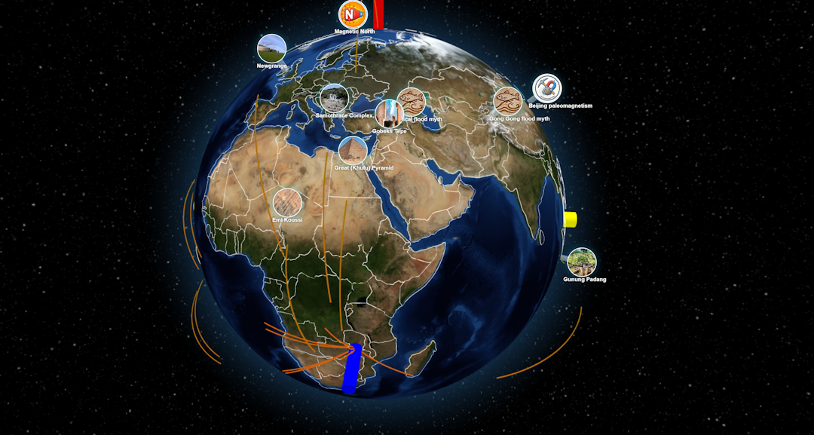
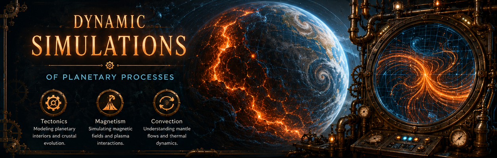
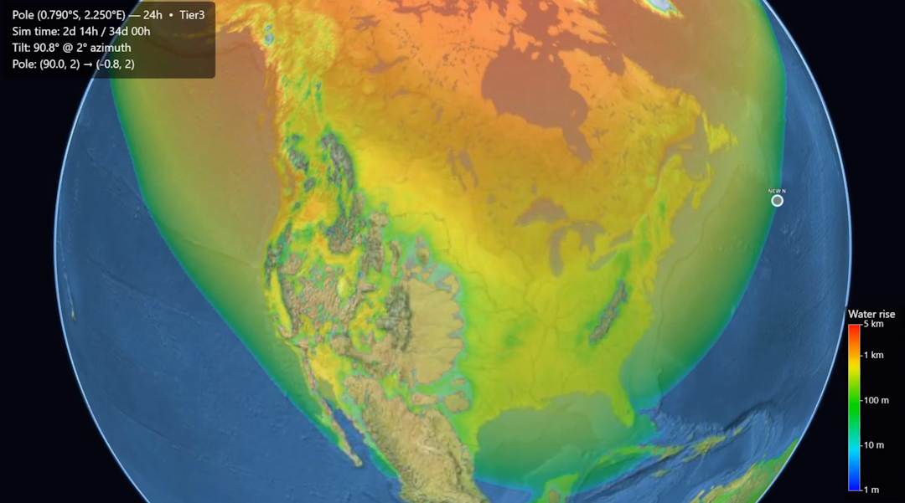

Methuselah's ECDO Globe Model
(Based on Ethical Skeptic's ECDO evidence on megalithic sites.)

Visit Methuselah's ECDO Globe Model

Beta
Other Models - Simulations - Misc Feeds

This page will have additional research and content that the other tabs to not cover.
This section will be for models related to the ECDO and pole shift theories.
(Based on Ethical Skeptic's ECDO evidence on megalithic sites.)

Visit Methuselah's ECDO Globe Model

Series of X articles.
Simulating ECDO and Hapgood's pole positions
Full ECDO S1>S2 and S2>S1 Simulation
High resolution simulation of Ben Davidson's pole shift theory